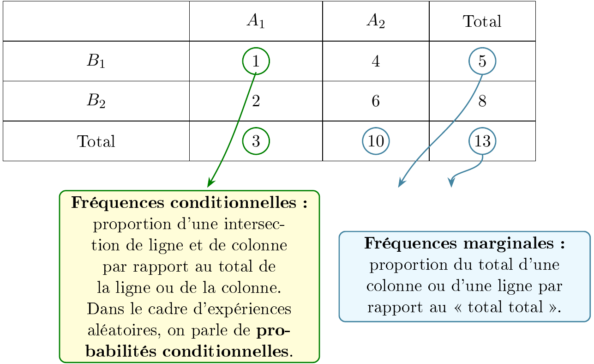

Chapitre VII : Fréquences et probabilités conditionnelles
Première STMG · Chapitre 7 — Fréquences et probabilités conditionnelles · cours de Frederik de Peyrelongue
I. Fréquences marginales
Dans une série de données, on étudie deux variables $A$ et $B$.
Les fréquences marginales de la variable $A$ sont les fréquences totales de chaque valeur prise par $A$ parmi l'ensemble de la population étudiée.
Remarque : dans le calcul des fréquences marginales de la variable $A$, on ne porte aucune attention à la variable $B$.
Le tableau ci-dessous synthétise la provenance de différents types de déchets selon le secteur d'activité en 2016.
| Déchets minéraux non dangereux | Déchets non minéraux non dangereux | Déchets dangereux | Total | |
| Agriculture et pêche | /// | $1{,}0$ | $0{,}3$ | $1{,}3$ |
| Industrie | $4{,}2$ | $17{,}6$ | $2{,}8$ | $24{,}6$ |
| Construction | $209{,}2$ | $12{,}4$ | $2{,}8$ | $224{,}4$ |
| Tertiaire | $0{,}8$ | $17{,}9$ | $1{,}0$ | $19{,}6$ |
| Traitement des déchets, assainissement, dépollution | $3{,}2$ | $17{,}2$ | $3{,}4$ | $23{,}7$ |
| Ménages | $2{,}8$ | $25{,}5$ | $0{,}7$ | $29{,}1$ |
| Total | $220{,}2$ | $91{,}4$ | $11{,}0$ | $322{,}7$ |
La fréquence marginale des « Déchets dangereux » :
La fréquence marginale des « Déchets provenant de la construction » est
On a relevé les températures quotidiennes moyennes dans un même lieu pendant deux mois. Les résultats, en nombre de jours, sont donnés dans le tableau ci-dessous.
| $[-20\,;-10[$ | $[-10\,;0[$ | $[0\,;5[$ | $[5\,;20[$ | $[20\,;40]$ | |
| Février | $2$ | $9$ | $13$ | $4$ | $0$ |
| Mars | $1$ | $7$ | $11$ | $9$ | $3$ |
Déterminer les fréquences marginales associées à chaque intervalle de température.
- calculer l'effectif total associé à chaque intervalle, puis l'effectif total de tous les intervalles ;
- en déduire les fréquences associées en calculant le rapport $\dfrac{\text{Effectif de la classe}}{\text{Effectif total}}$.
Solution : on peut calculer le nombre total de jours sur ces deux mois : $28$ en février et $31$ en mars, soit $59$ jours au total. On en déduit les fréquences marginales :
II. Probabilités – rappels
- On dit qu'une expérience est aléatoire lorsqu'on peut la reproduire dans les mêmes conditions et que le résultat, appelé issue, est imprévisible.
- L'ensemble des issues possibles est appelé univers de l'expérience aléatoire.
- L'univers d'une expérience aléatoire est souvent noté $\Omega$.
- On appelle événement une réunion d'issues.
On choisit une personne au hasard parmi une liste de personnes et on note sa date d'anniversaire (jour et mois). L'univers de cette expérience est l'ensemble des $366$ jours d'une année bissextile. Un événement serait, par exemple, « La personne choisie est née en août », qui rassemble $31$ issues : les jours du 1er au 31 août.
Lors d'une expérience aléatoire sur un univers fini dont les issues sont équiprobables, on appelle probabilité d'un événement la proportion d'issues qui réalisent cet événement.
On note $\prob(A)$ la probabilité d'un événement $A$.
On tire une carte dans un jeu de $52$ cartes. La probabilité de l'événement « Tirer un as » est la proportion d'as dans le jeu.
L'univers de l'expérience $\Omega=\{jeu de carte\}$, $\Card(\Omega)=52$.
On note $A$ l'événement « Tirer un as » : $A=\{les\ As\}$, $\Card(A)=4$.
On appelle intersection des événements $A$ et $B$ les issues communes aux événements $A$ et $B$ ; on note $A\cap B$.
Exemple : on veut un cœur et un roi : une seule issue, le roi de cœur.
On appelle union des événements $A$ et $B$ les issues des événements $A$ ou $B$ ; on note $A\cup B$.
Exemple : on veut un cœur ou un roi : on a $16$ issues, tous les cœurs plus les rois de pique, trèfle et carreau.

Un club de sport propose deux options en plus de l'abonnement à un cours collectif : l'accès aux salles de musculation et un suivi par un coach. Les $225$ inscrits à ce cours sont répartis selon le tableau ci-dessous.
| Avec coach : $C$ | Sans coach : $\overline{C}$ | |
| Accès aux salles $S$ | $58$ | $77$ |
| Sans accès aux salles $\overline{S}$ | $38$ | $52$ |
On choisit au hasard un client.
1. Quelle est la probabilité qu'il ait choisi les deux options à la fois ?
2. Quelle est la probabilité qu'il ait choisi au moins une des deux options ? Arrondir à $0{,}1$ % près.
III. Probabilités conditionnelles
Soient $A$ et $B$ deux événements d'une même expérience aléatoire. On appelle probabilité conditionnelle de $A$ relativement à $B$ la probabilité que $A$ soit réalisé quand on sait que $B$ est réalisé.
On note $\prob_{B}(A)$, la probabilité conditionnelle de $A$ relativement à $B$. On dit « probabilité de $A$ sachant $B$ ».
On considère l'ensemble $E$ des issues d'une expérience aléatoire. On suppose que $E$ est fini et que les issues sont équiprobables.
Soient $A$ et $B$ deux événements. On suppose que $\prob(B)\neq 0$.
Dans ces conditions, la probabilité conditionnelle de $A$ relativement à $B$ est :
On choisit au hasard une destination parmi celles proposées par une agence de voyages, réparties selon le continent et le type comme suit.
| Europe | Amérique du Nord | Asie | Amérique du Sud | |
| Zone urbaine | $20$ | $15$ | $19$ | $3$ |
| Zone rurale | $28$ | $22$ | $11$ | $8$ |
On note respectivement $E$ et $U$ les événements « La destination est européenne. » et « Le voyage est à destination d'une zone urbaine. ». La probabilité de voyager en zone urbaine sachant qu'on a choisi une destination en Europe est
Dans une bibliothèque, les livres sont répartis selon le tableau ci-dessous. On choisit un livre au hasard dans la bibliothèque. On note respectivement $R$, $B$, $M$, $J$ et $A$ les événements : « Choisir un roman. », « Choisir une BD. », « Choisir un manga. », « Choisir un livre jeunesse. » et « Choisir un livre adultes. ».
| Romans | BD | Mangas | Total | |
| Jeunesse | $154$ | $258$ | $221$ | |
| Adultes | $309$ | $165$ | $187$ |
Calculer, à $10^{-2}$ près, les probabilités conditionnelles des événements $R$, $B$ et $M$ relativement à l'événement $J$.
- repérer la ligne ou la colonne du tableau par rapport à laquelle on conditionne : ici, on travaille avec la ligne « Jeunesse » ;
déterminer le nombre total d'éléments dans cette catégorie.
La probabilité de $R$ relativement à $J$ est $\prob_{J}(R)=\dfrac{\Card(R\cap J)}{\Card(J)}$ ;
- vérifier que la somme des probabilités conditionnelles relativement au même événement vaut $1$.
IV. Fiche méthode
IV.1 Fréquence marginale
- On commence par déterminer les effectifs de $A$ et de $E$.
La fréquence marginale de $A$ dans $E$ est :
\[ f=\frac{\text{Effectif total de } A}{\text{Effectif total de } E} =\frac{\Card(A)}{\Card(E)} . \]
| $A$ | $\overline{A}$ | Total | |
| $B$ | $20$ | $15$ | $\mathbf{35}$ |
| $\overline{B}$ | $12$ | $53$ | $65$ |
| Total | $\mathbf{32}$ | $68$ | $\mathbf{100}$ |
IV.2 Fréquence conditionnelle
- Pour calculer la fréquence conditionnelle de $A$ relativement à $B$, il faut déterminer l'effectif de $A\cap B$ et l'effectif total de $B$.
La fréquence conditionnelle de $A$ relativement à $B$ est :
\[ f=\frac{\text{Effectif total de } A\cap B}{\text{Effectif total de } B} =\frac{\Card(A\cap B)}{\Card(B)} . \]
| $A$ | $\overline{A}$ | Total | |
| $B$ | $\mathbf{20}$ | $15$ | $\mathbf{35}$ |
| $\overline{B}$ | $12$ | $53$ | $65$ |
IV.3 Compléter un tableau d'effectifs croisés
- Compléter la dernière case d'une ligne ou d'une colonne en procédant par additions ou soustractions.
- Utiliser les fréquences conditionnelles lorsqu'il manque plus d'une case sur une ligne ou sur une colonne : l'effectif de la case située à l'intersection de la colonne $A$ et de la ligne $B$ est égal à l'effectif de $B$ multiplié par la fréquence conditionnelle de $A$ relativement à $B$.
IV.4 Calcul d'une probabilité conditionnelle
- Utiliser le tableau croisé d'effectifs.
- Utiliser la formule $\prob_{B}(A)=\dfrac{\Card(A\cap B)}{\Card(B)}$.
| $A$ | $\overline{A}$ | Total | |
| $B$ | $\mathbf{20}$ | $15$ | $\mathbf{35}$ |
| $\overline{B}$ | $12$ | $53$ | $65$ |
V. Carte mentale
